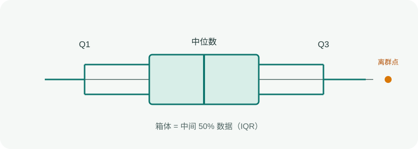

两个班的平均分和标准差可能完全相同，但一个班的成绩集中在中间，另一个班却由两个截然不同的群体组成。只看几个汇总数字，可能错过数据真正的结构；我们还需要观察分布形态。
答案是：远远不够。只看均值和标准差，就像只看一个人的身高和体重就判定他健康与否一样——你完全漏掉了关于"体型"的关键信息。数据也有它的"体型"，也就是分布形态。这一章我们就来学习如何用更精细的指标刻画数据分布的形状。
曾经有一个团队找我 debug 他们一个分析项目。他们收集了几千个用户的页面停留时间数据，直接用了 t 检验来比较两个版本的差异，结果 p 值显著。但当我拿到原始数据画了个直方图后，当场就发现了问题——分布严重右偏，还有一个巨大的尖峰在0-1秒之间（那些点进来就关掉的用户）。这种情况下，t检验的正态假设完全不成立，结论自然不可靠。这就是不看分布形态直接上统计方法的典型翻车案例。

4.1 百分位数与四分位数
百分位数（Percentile）是描述数据"站位"的有力工具。第 p 百分位数意味着"有 p% 的数据小于或等于这个值"。
最常见的是三个四分位数（Quartile）：
- Q1（第25百分位数）：25%的数据小于等于这个值
- Q2（第50百分位数）：也就是中位数
- Q3（第75百分位数）：75%的数据小于等于这个值
为什么百分位数比均值和标准差更适合描述偏态分布？因为百分位数是按顺序位置定义的，不受极端值的影响。比如说"收入中位数是8,000元"比"平均收入是15,000元"更能说明普通人的收入水平——特别是在极端富豪拉高平均值的情况下。
| 百分位 | 含义 | 典型用途 |
|---|---|---|
| P1 / P5 | 最低的1%/5% | 异常值检测、风险底线 |
| P25 (Q1) | 四分之一分位点 | 数据分布的下界 |
| P50 (Q2) | 中位数 | 集中趋势的稳健度量 |
| P75 (Q3) | 四分之三分位点 | 数据分布的上界 |
| P95 / P99 | 最高的5%/1% | 服务性能指标、极大值分析 |
4.2 箱线图：一图看懂数据分布
箱线图（Boxplot）是统计可视化中最实用的发明之一。它在一张图中同时展示了数据的五个关键信息（五数概括）：最小值、Q1、中位数、Q3、最大值。事实上，它比"五个数"展示的信息更多——它还能标注异常值。
画箱线图的步骤：
- 画一个矩形箱，底部是Q1，顶部是Q3，箱内一条线是Q2（中位数）
- 从箱子上下边缘各延伸出一条"须"，长度通常是 1.5 × IQR
- 超出须范围的数据点被标记为异常值（outlier）
import numpy as np
import matplotlib.pyplot as plt
import seaborn as sns
# 生成三组不同分布的数据
np.random.seed(42)
normal_data = np.random.normal(50, 15, 200)
skewed_right = np.random.exponential(30, 200)
bimodal = np.concatenate([
np.random.normal(30, 8, 100),
np.random.normal(70, 8, 100)
])
# 计算偏度和峰度
from scipy import stats
print(f"正态分布偏度: {stats.skew(normal_data):.3f}")
print(f"右偏分布偏度: {stats.skew(skewed_right):.3f}")
print(f"双峰分布偏度: {stats.skew(bimodal):.3f}")
print(f"\n正态分布峰度: {stats.kurtosis(normal_data):.3f}")
print(f"右偏分布峰度: {stats.kurtosis(skewed_right):.3f}")
print(f"双峰分布峰度: {stats.kurtosis(bimodal):.3f}")
# 绘制箱线图
fig, axes = plt.subplots(1, 3, figsize=(12, 4))
sns.boxplot(data=normal_data, ax=axes[0])
axes[0].set_title('正态分布')
sns.boxplot(data=skewed_right, ax=axes[1])
axes[1].set_title('右偏分布（指数分布）')
sns.boxplot(data=bimodal, ax=axes[2])
axes[2].set_title('双峰分布')
plt.tight_layout()
plt.show()
# 输出：
# 正态分布偏度: 0.055
# 右偏分布偏度: 1.731
# 双峰分布偏度: 0.022
# 正态分布峰度: -0.079
# 右偏分布峰度: 3.742
# 双峰分布峰度: -1.452💡 读箱线图小窍门：看中位数在箱子里的位置——如果中位数偏向箱子底部（靠近Q1），分布右偏；偏向顶部（靠近Q3），分布左偏。理想的对称分布中，中位数应该在箱子正中间。同时，看两个"须"的长度——一侧明显更长就说明数据朝那个方向偏。
4.3 偏度（Skewness）：数据往哪边偏
偏度是描述分布不对称程度的量化指标：
- 偏度 = 0：分布大致对称（如正态分布）
- 偏度 > 0：右偏（正偏），右侧尾部更长，均值 > 中位数
- 偏度 < 0：左偏（负偏），左侧尾部更长，均值 < 中位数
一个常用的经验判断：
- |偏度| < 0.5：分布大致对称
- 0.5 ≤ |偏度| < 1：中等偏态
- |偏度| ≥ 1：严重偏态
实际数据中，很多经济变量都是右偏的：收入、房价、页面停留时间…原因很简单——这些变量下限是0（或接近0），但上限可以是无穷大。这就导致右侧拖出一条长尾巴。
4.4 峰度（Kurtosis）：尾部有多重
如果说偏度描述的是"左右不对称"程度，峰度描述的就是"数据在尾部的重量"——也就是极端值出现的频率。
统计学中通常使用超额峰度（Excess Kurtosis），即以正态分布的峰度（3）为基准：
- 超额峰度 = 0：尾部行为类似正态分布（中尾）
- 超额峰度 > 0：尖峰厚尾（肥尾），极端值比正态分布多
- 超额峰度 < 0：低峰薄尾（瘦尾），极端值比正态分布少
峰度这个概念在实际中非常重要却经常被忽视。在金融领域，收益率数据通常有"厚尾"特征——这意味着极端市场事件（比如暴跌5%以上）发生的频率远高于正态分布的预测。2008年金融危机的根本原因之一，就是华尔街的风险模型假设了正态分布，低估了尾部风险。
| 分布形态 | 偏度 | 峰度（超额） | 现实例子 |
|---|---|---|---|
| 正态分布 | ≈ 0 | ≈ 0 | 身高、测量误差 |
| 右偏 | > 0 | 可正可负 | 收入、房价、点击量 |
| 厚尾 | 可正可负 | > 0 | 股票收益率、自然灾害 |
| 均匀分布 | ≈ 0 | < 0（薄尾） | 摇骰子、随机数 |
4.5 z-score 与数据标准化
最后一个重要的描述统计工具是z-score（标准分数）。它回答的问题是："某个数据点偏离均值多少个标准差？"
计算公式：z = (x - μ) / σ
z-score 把不同尺度的数据放到同一个标尺上比较。比如一个学生考了85分，全班均分70，标准差10——他的z-score是1.5。另一个学生考了110分，但全班均分100，标准差20——z-score只有0.5。所以虽然第二个学生的绝对分更高，但第一个学生在班里的相对位置更靠前。
import numpy as np
import pandas as pd
from scipy import stats
# 模拟多个特征的数据
np.random.seed(42)
data = pd.DataFrame({
'age': np.random.normal(35, 10, 100),
'income': np.random.normal(20000, 8000, 100), # 单位不同！
'score': np.random.normal(70, 15, 100)
})
# z-score 标准化
def z_score(x):
return (x - x.mean()) / x.std()
data_z = data.apply(z_score)
print("原始数据描述：")
print(data.describe().round(1))
print("\n标准化后数据描述（均值为0，标准差为1）：")
print(data_z.describe().round(3))
# 检查异常值：|z| > 3 的数据点
outliers = (np.abs(data_z) > 3).any(axis=1)
print(f"\n异常值数量（|z| > 3）: {outliers.sum()}")📖 踩坑故事：没看偏度直接用正态假设
2018年，我参与了一个电商平台的用户画像项目。团队需要根据用户的月消费金额对用户分层。数据分析师直接计算了均值和标准差，然后用"均值±1σ"和"均值±2σ"来划分高、中、低消费用户。
当我看他们的代码时，发现消费金额的分布是严重右偏的——大部分用户消费在0-500元之间，但有一小撮大客户月消费超过5万元。正态假设下的分层方案产生了荒谬的结果：低消费组的阈值居然是负数！
我让团队先画了直方图和箱线图，结果一目了然：分布右侧拖了长长的尾巴。正确的做法是使用百分位数来分层（比如P25以下为低消费，P25-P75为中消费，P75以上为高消费），或者对数据进行对数转换后再建模。
教训：不论后续要用多么高级的统计方法，第一步永远是查看数据分布形态。在不知道数据长什么样之前，任何参数统计方法都可能是空中楼阁。
⚠️ 关于z-score的两个局限：第一，z-score假设数据大致对称——如果数据严重偏态，均值和标准差都不是好的参考点，z-score也会失去意义。第二，z-score做异常值检测（比如|z|>3）只在数据近似正态时比较靠谱，对于厚尾分布，这个阈值需要调整。在实践中，IQR方法（认为低于Q1-1.5×IQR或高于Q3+1.5×IQR的数据是异常值）通常更稳健。
从第3章到第4章，我们花了两章时间学习了描述统计的完整工具箱。你能用均值或中位数描述"中心"，用标准差或IQR描述"分散程度"，用偏度和峰度描述"形状"，用z-score做"标准化"。这些工具构成了任何数据分析项目的起点。下一章，我们进入可视化的世界——数据可视化基础，学习如何用图表把数据的秘密"画"出来。
CORE RELATION
本章核心关系
常见 Tukey 箱线图以 1.5×IQR 作为须的延伸界限，软件实现需查阅文档。
分布形状会影响你如何总结数据
切换分布形态，思考只报告均值和标准差会遗漏什么信息。
教学模拟：用于理解概念与方向，不替代真实数据分析、正式功效计算或研究设计审查。
TAKEAWAYS
本章要记住的三件事
- 分位数描述排序位置，箱线图压缩呈现中间 50% 与尾部信息。
- 箱线图离群点是需要调查的观测，不自动等于错误数据。
- 偏度和峰度是形状摘要，不能替代直方图或密度图。
FURTHER READING
延伸阅读与核对来源
参考来源用于核对概念与方法。涉及具体数据、历史细节或行业案例时，应回到原始研究或官方文档逐项核验。